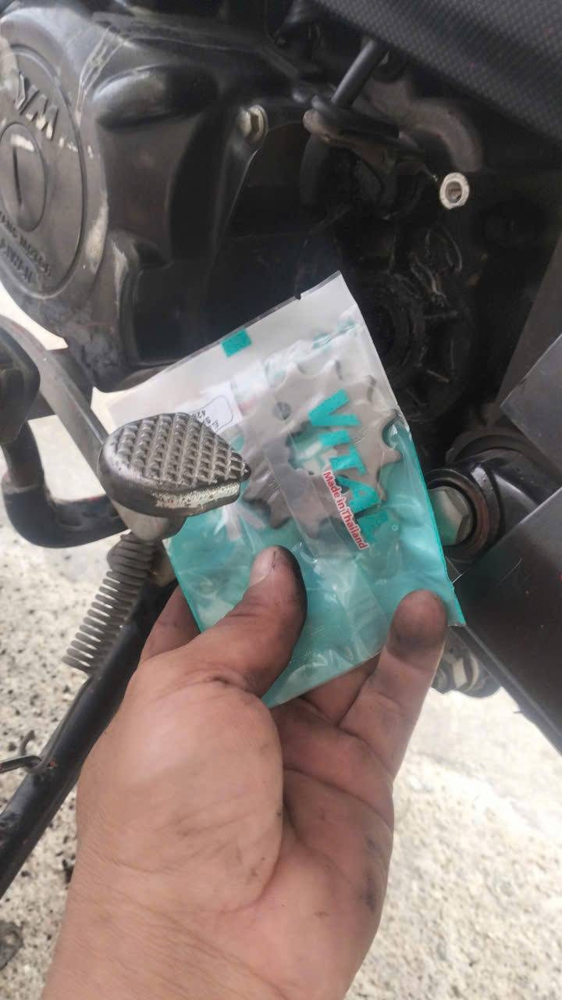
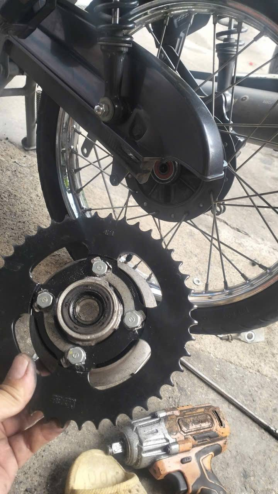
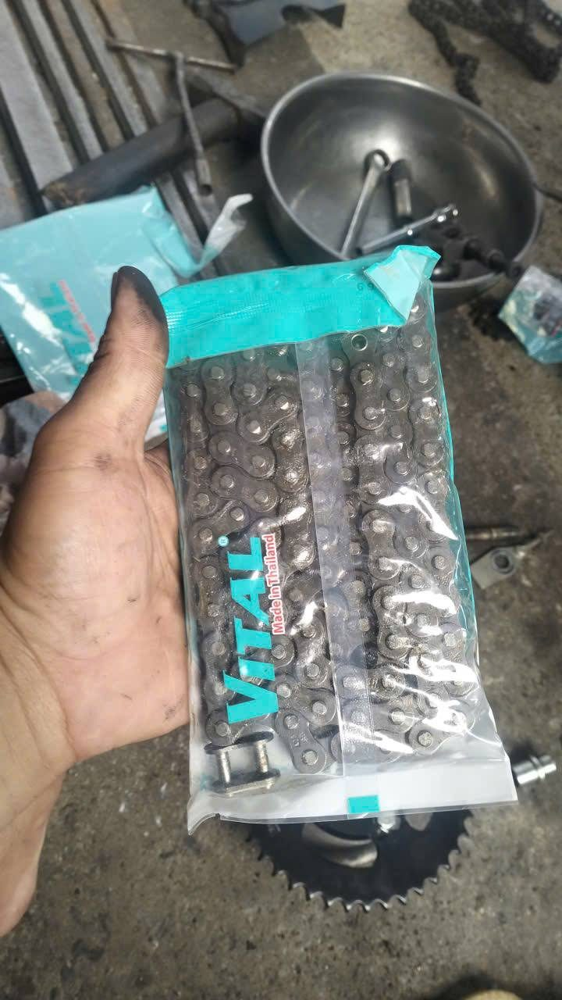

엔진 출력축의 작은 스프로킷 — 새것으로 교체 (VITAL, 태국산).

뒷바퀴의 큰 스프로킷 — 새것으로 교체.

체인은 항상 새것 (VITAL, 태국산), 장력을 제대로 맞춰 늘어지거나 미끄러지지 않습니다.
서류상 실제 50cc인 오토바이를 구매해 냐짱으로 가져와 정비합니다. 매장에 오시면 오토바이는 이미 완벽히 준비되어 있습니다: 고치거나 바꾸거나 더 살 것이 없습니다. 결제하고 바로 타세요.
베트남 전역에서 깨끗한 서류의 오토바이를 찾습니다 — 블루카드에 50cc 기재.
오토바이를 받아 냐짱의 저희 매장으로 가져옵니다.
스프로킷과 체인을 교체해 더 경쾌하고 튼튼하게 만듭니다. 엔진은 건드리지 않습니다: 순정 50cc.
오일, 브레이크, 전기, 가득 주유. 직접 점검하고 시운전합니다.
정비의 핵심은 구동계입니다: 앞 스프로킷, 뒤 스프로킷, 체인. 새 부품을 달고 체인 장력을 제대로 맞추면 엔진 힘이 살아나 더 경쾌하게 달리고 언덕도 오르며, 새 부품이라 오래갑니다.

엔진 출력축의 작은 스프로킷 — 새것으로 교체 (VITAL, 태국산).

뒷바퀴의 큰 스프로킷 — 새것으로 교체.

체인은 항상 새것 (VITAL, 태국산), 장력을 제대로 맞춰 늘어지거나 미끄러지지 않습니다.
엔진 오일을 교체합니다.
안전하게 탈 수 있도록 브레이크를 전부 점검·조정합니다.
라이트, 방향지시등, 경적, 스타터, 배터리를 점검합니다.
연료를 가득 채워 드립니다 — 받자마자 출발.
일반 50cc는 약 50 km/h. 저희 오토바이는 1인 최고 70 km/h, 2인 최고 60 km/h, 2인 언덕길도 OK.
순정 엔진, 새 스프로킷과 체인. 반자동은 잘 고장 나지 않고 수리비도 저렴합니다.
순정 엔진, 서류상 50cc — 면허 없이 타세요.